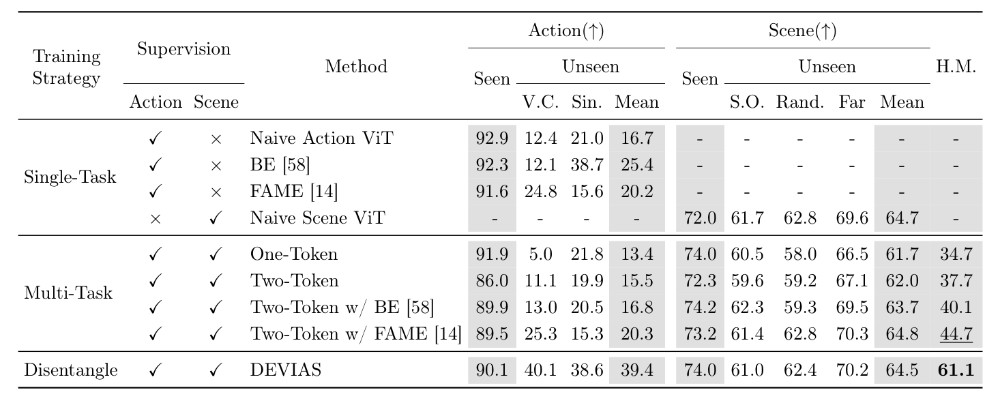
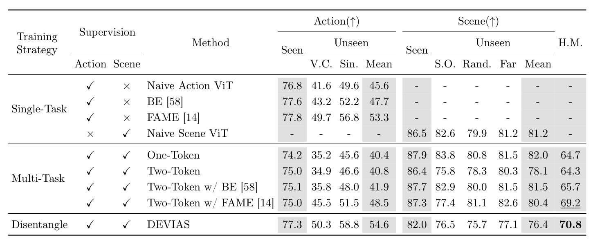
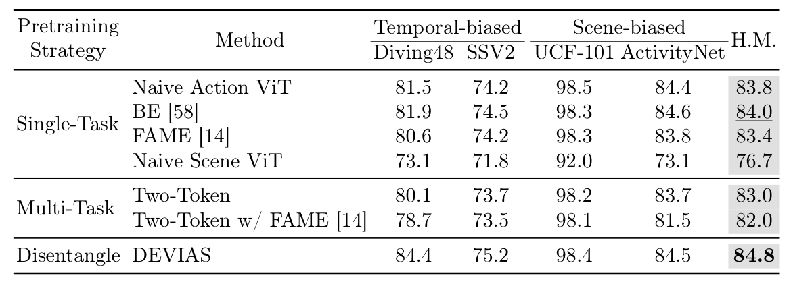
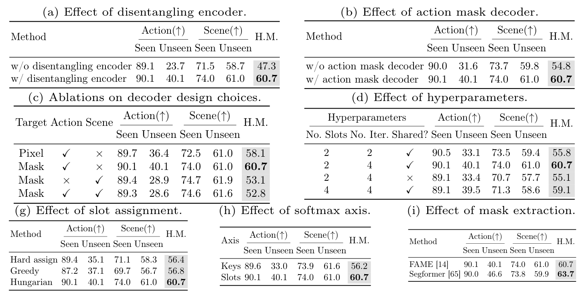

Performances for both seen and unseen combination scenarios on UCF-101
We report the Top-1 action recognition and the Top-5 scene recognition accuracies(%).
We also report the harmonic mean (H.M.) of the action recognition and scene recognition.
V.C./Sin. denotes the SCUBA VQGAN-CLIP/Sinusoidal; S.O./Rand. denotes the HAT Scene-Only/Random.
For the description of each baseline model, please see the paper.

Performances for both seen and unseen combination scenarios on Kinetics-400
We report the Top-1 action recognition and the Top-5 scene recognition accuracies(%).
We also report the harmonic mean (H.M.) of the action recognition and scene recognition.
V.C./Sin. denotes the SCUBA VQGAN-CLIP/Sinusoidal; S.O./Rand. denotes the HAT Scene-Only/Random.

Disentangled action and scene representation is beneficial for diverse downstream tasks
For fine-tuning on downstream datasets with diverse characteristics, temporal-biased or scene-biased, DEVIAS uses the concatenation of the action and scene slot as input to the classification head.
As a result, DEVIAS shows favorable performances on Diving48,
Something-Something V2,
UCF-101, and ActivityNet compared to the baselines.
Please see the paper for more details.

Ablation study
We provide extensive ablation studies to validate the effect of each component of DEVIAS.
Please see the paper for detail explanations and more studies.
